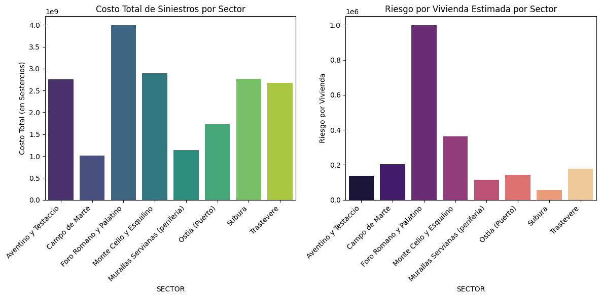

Analisis de siniestros de vivienda
Analisis de frecuencia y severidad para estimacion de riesgo por sector y metricas clave.
- Depuracion y estandarizacion de variables criticas.
- Metricas de riesgo por sector para priorizacion.
- Visualizaciones para interpretacion ejecutiva.